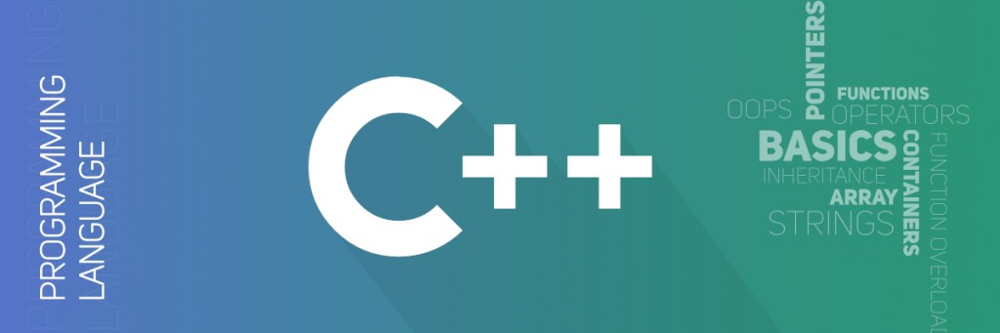

HOME

ນຳສະເໜີພາສາ C++
ພາສາ C++ ເປັນພາສາລະດັບກາງ ໄດ້ພັດທະນາໂດຍ Dr.Bjarne Stroustrup ເຊິ່ງເປັນນັກວິໄຈຢູ່ຫ້ອງແລັບ

Dr.Bjarne Stroustrup.
ຄຸນສົມບັດຂອງ ພາສາ c++:
C++ ເປັນໂປຣແກຣມແບບລູກປະສົມ ຫຼື Hybrid ທີ່ລວມເອົາຄວາມສາມາດຂອງພາສາ C ກັບການຂຽນໂປຣແກຣມ
ເຊີງວັດຖຸ OOP (Object-Oriented Programming) ເຂົ້າດ້ວຍກັນ.
ເນື່ອງຈາກພາສາ C ເປັນພາສາໂປຣແກຣມທີ່ມີ
ປະສິດທິພາບ ດັ່ງນັ້ນ C++ ຈຶ່ງພັດທະນາຕໍ່ຍອດໂດຍຍັງຄົງຄວາມສາມາດຂອງພາສາ C ເອົາໄວ້ ໄດ້ແກ່:
• ການໃຊ້ໂມດູນ : ສາມາດເອີ້ນໃຊ້ໂມດູນຈາກໄລ້ບຣາລີ້ທີ່ມີ ທັ້ງໃນໄລ້ບຣາລີ້ຈາກພາສາ C ແລະ C++.
• ມີຄວາມໃກ້ຄຽງກັບພາສາເຄື່ອງ : ໂປຣແກຣມເຮັດວຽກໄດ້ຢ່າງມີປະສິດທິພາບ ເພາະຄອມພາຍ ( Compiler ໂຕ
ແປພາສາ ) ເປັນພາສາເຄື່ອງໂດຍກົງ ສົ່ງຜົນໃຫ້ໂປຣແກຣມເຮັດວຽກໄດ້ຢ່າງວ່ອງໄວ.
• ຮອງຮັບກັບແພັດຟອມຕ່າງໆ : ເປັນພາສາທີ່ມີຄອມພາຍເລີ້ ( Compiler ໂຕແປພາສາ ) ຂອງແພັດຟອມຕ່າງໆ
ຮອງຮັບ ດັ່ງນັ້ນເມື່ອເຮົາຂຽນໂປຣແກຣມເທິງແພັດຟອມໜຶ່ງ ສາມາດນຳໄປຄອມພາຍ ແລະ ໃຊ້ງານອີກແພັດຟອມ
ໜຶ່ງໄດ້ໂດຍບໍ່ຕ້ອງແກ້ໄຂໂປຣແກຣມ ເພາະໃຊ້ໄລ້ບຣາລີ້ມາດຕະຖານຈຶ່ງສາມາດເຮັດວຽກໄດ້ທຸກແພັດຟອມ.
ຂໍ້ດີ - ຂໍ້ເສຍຂອງ ພາສາ c++:
ຂໍ້ດີ |
ຂໍ້ເສຍ |
• ເປັນພາສາທີ່ໄດ້ຮັບຄວາມນິຍົມຈຶ່ງມີການສະໜັບສະໜູນຫຼາຍ ທັງຄູ່ທື ແລະ ຊອດໂຄ້ດ (source code) ໃນການສຶກສາ. |
• ບໍ່ມີລະບົບຈັດການໜ່ວຍຄວາມຈຳຈຶ່ງຕ້ອງໃຊ້ໄລບຣາລີ້ເສີມຈາກພາຍນອກ. |